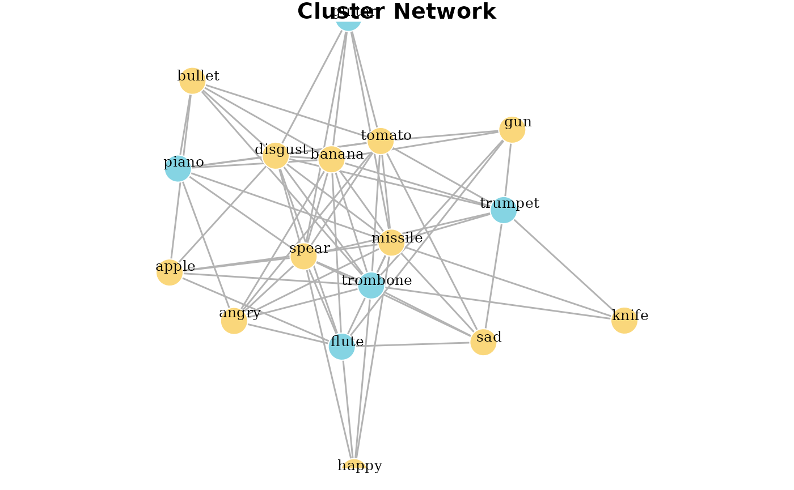

SemanticDistance_Data_Viz
Jamie Reilly, Hannah R. Mechtenberg, Emily B. Myers, Jonathan E. Peelle
2026-03-31
Source:vignettes/SemanticDistance_Data_Viz.Rmd
SemanticDistance_Data_Viz.RmdData Visualization Options
SemanticDistance contains two primary visualization
options. Most users will be able to plot monologue distances as
continuously changing time series using simple approaches like
ggline, specializing bells and whistles to their own unique
needs. The visualization funtions we have included are used for gleaning
structure(s) from lists of words. At present, these options include
hierarchical cluster analysis (producing a triangle dendrogram) and
network analysis (producing a simple undirected graph network). Each of
these approaches uses simple machine learning algorithms (kmeans) to
determine optimal cluster sizes.
STEP 1: CLEAN AND FORMAT YOUR MONOLOGUE OR LIST
#Start from
MyCleanList <- clean_monologue_or_list(Unordered_List, wordcol='mytext')
knitr::kable(head(MyCleanList, 10), format = "pipe")| id_row_orig | text_initialsplit | word_clean | id_row_postsplit |
|---|---|---|---|
| 1 | trumpet | trumpet | 1 |
| 1 | trombone | trombone | 2 |
| 1 | flute | flute | 3 |
| 1 | piano | piano | 4 |
| 1 | guitar | guitar | 5 |
| 1 | gun | gun | 6 |
| 1 | knife | knife | 7 |
| 1 | missile | missile | 8 |
| 1 | bullet | bullet | 9 |
| 1 | spear | spear | 10 |
STEP 2: CREATE DENDROGRAM or NETWORK
From your cleaned and formatted list, visualize relations between words
Option 1: Hierarchical Cluster Dendrogram
Words on any vector of words but only makes sense for unordered word
lists! Produces a dendogram from a vector of words. First pulls words,
then creates a square matrix with cosine distances for all possible word
pairs: d[i,j]. Then converts semantic distance matrix to Euclidean
distance. Then plots a hierchcial clustering solution moving words
closer together in proximity based on their distance.
Arguments: dat dataframe processed using
clean_monologue_or_list() output quoted
argument dendrogram or network default is
dendrogram dist_type quoted argument,
which distance norms would you like? default is embedding
alt is ‘SD15’
mydendro <- wordlist_to_network(MyCleanList, output='dendrogram', dist_type='embedding')
print(mydendro)
#> 'dendrogram' with 2 branches and 17 members total, at height 5.168642Option 2: iGraph network
Takes hclust properties from dendrogram steps and creates a simple
igraph object. dat dataframe cleaned using
clean_monologue_or_list output quoted
argument dendrogram or network default is
dendrogram dist_type default is
‘embedding’, alt is ‘SD15’
mynetwork <- wordlist_to_network(MyCleanList, output='network', dist_type='embedding')
print(mynetwork)
#> IGRAPH 9213741 UNW- 17 68 --
#> + attr: name (v/c), cluster (v/n), color (v/c), size (v/n), label
#> | (v/c), label.color (v/c), label.cex (v/n), weight (e/n), color (e/c),
#> | width (e/n)
#> + edges from 9213741 (vertex names):
#> [1] trombone--missile trombone--gun trombone--bullet trombone--knife
#> [5] trombone--spear trombone--apple trombone--banana trombone--tomato
#> [9] trombone--disgust trombone--angry trombone--sad trombone--happy
#> [13] piano --missile piano --bullet piano --spear piano --banana
#> [17] piano --tomato piano --disgust piano --angry guitar --missile
#> [21] guitar --spear guitar --banana guitar --tomato guitar --disgust
#> + ... omitted several edges